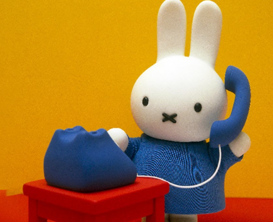

米菲兔（Miffy）最喜歡在陽光燦爛的午後，走進自家花園觀察那些盛開的繽紛花朵。對米菲而言，每一朵花都像是一個可愛的朋友。她總是靜靜地站在花叢旁，用那一雙充滿好奇的眼睛，仔細端詳紅色的鬱金香如何挺拔生長，或是藍色風信子在微風中輕輕搖曳的姿態。 在迪克·布魯納的繪本世界裡，米菲雖然不多話，但她對自然的熱愛無處不在。看著這些花，米菲的心情總會變得很平靜、很快樂。對她來說，欣賞花朵不只是視覺的享受，更是一場關於生命與色彩的無聲對話。

在米菲兔（Miffy）的世界裡，除了在花園散步與畫畫，她還有一件非常喜歡做的事情，那就是拿起那支色彩鮮豔的電話，撥給她最思念的朋友和親人。對米菲來說，電話不只是一個塑膠玩具或通訊工具，更是一座神奇的橋樑，能把她的笑聲傳到很遠的地方。 每當清晨陽光灑進房間，米菲有時會想起住在遠方的爺爺奶奶。她會踮起腳尖，認真地撥下號碼。當電話那頭傳來爺爺慈祥的聲音，米菲的眼睛便會興奮地瞇成彎彎的月牙。她會分享今天早餐吃了甜甜的果醬麵包，也會提到花園裡的鬱金香又長高了一點。雖然看不見彼此的臉，但透過小小的話筒，米菲能感受到滿滿的愛與關懷。